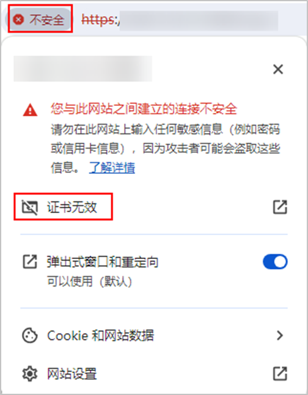

注册CNware虚拟化平台时，建议导入CNware虚拟化平台的CA证书，否则系统将无法验证其所访问设备的信息，安全性存在风险。本节介绍如何获取CNware虚拟化平台的CA证书。
自行下载存储资源CA证书
- 在Chrome浏览器中，输入CNware虚拟化平台的URL地址，按回车。
- 单击URL输入栏左侧的“不安全”，单击“证书无效”。
不同浏览器提示方式不同，此处以Google Chrome 120为例进行说明。

- 在弹出的对话框中，选择“详细信息”页签，单击“导出”。
- 根据向导提示，导出证书并重命名证书文件为XXX.pem。

XXX为实际的证书名，证书格式必须为.pem格式。